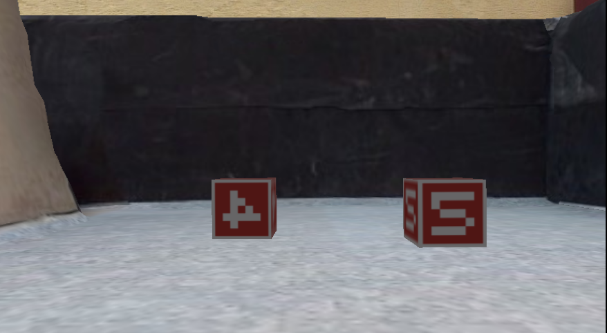
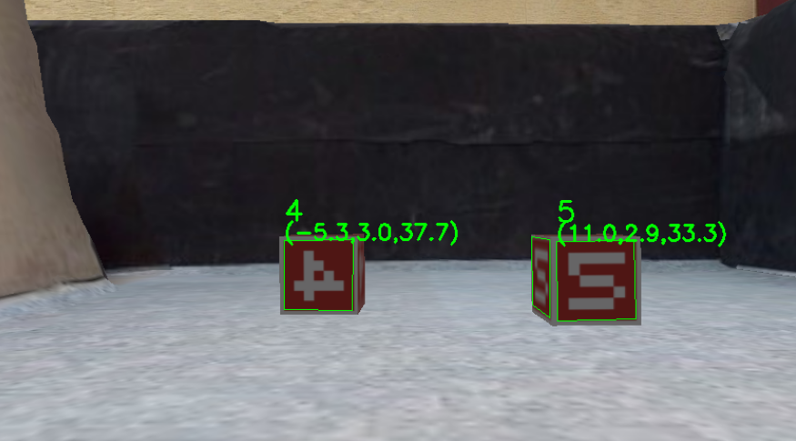
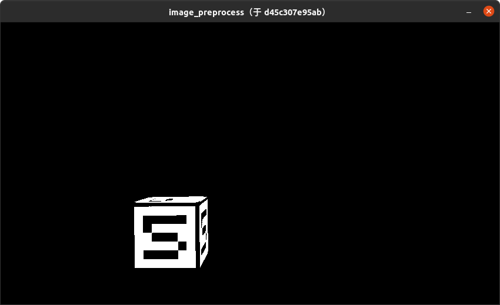
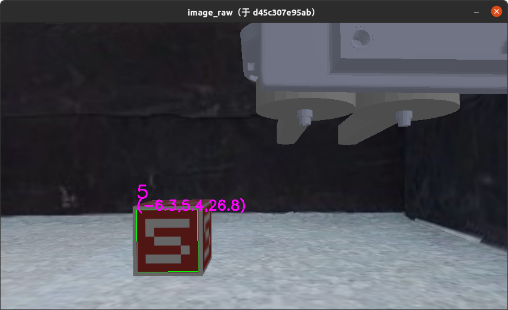

作业2 - 数字定位与识别
在下列教程中，请将 [Student ID] （包括括号）替换为自己的学号。
1. 这次作业的目标是什么？
本次作业的目标是根据第一人称视角相机拍摄得到的图像（下图1），找到图中包含的物块相对小车的位姿，并给出物块上所写的数字（下图2）。


本次作业中实验框架已经搭建完成，实验过程分为三步：
- 处理输入图像，生成一张相同尺寸的掩码图，掩码图中物块部分为255，其他部分为0
- 根据掩码图以及相机内参矩阵，找到物块面顶点在图像上的坐标，以及其变换矩阵
- 根据找到的物块面对数字进行分类
其中第三步已经给出完整实现，同学们不需要在作业中完成（但是仍然推荐阅读给出的实现）；第一步和第二步分别对应course_ws/src/marker_location/scripts/img_processor.py文件中的Processor.preprocess与Processor.detect_square函数，同学们在此次作业中需要实现这两个函数。
def preprocess(self, frame):
"""Preprocess the image captured by the camera, so that pixels that belong to cubes have the value of 255 while the counterparts have the value of 0
Args:
frame (numpy.ndarray): Captured image in RGB channels
Returns:
numpy.ndarray: The mask of cubes. Numpy array of the same shape as frame
"""
image_bool = frame
############# TODO ##############
#################################
return image_bool
def detect_square(self, image_bool, camera_matrix):
"""Find the quad containing numbers within given frames, along with their poses in the environment
Args:
image_bool (numpy.ndarray): The mask of cubes provided by preprocess function
camera_matrix (numpy.ndarray): The intrinsic matrix of the camera, 3x3
Returns:
(q, t, r):
- q: quad position on the image
- t: quad translation vectors
- r: quad rotation vectors
"""
quads_prj, tvec_list, rvec_list = None, None, None
############# TODO ##############
#################################
return quads_prj, tvec_list, rvec_list
2. 我要怎样完成这次作业？
2.1 克隆作业仓库
将作业仓库克隆至本地：
git clone https://gitee.com/tb5zhh/is2022-fall-hw2.git
或
git clone https://github.com/AIR-DISCOVER/IS2022Fall-hw2.git
2.2 补充实现
补充 course_ws/src/marker_location/scripts/img_processor.py 文件中的实现。
标注有 [TODO]的部分是需要完成的，你需要实现：
Processor.preprocess: 传入参数为numpy.ndarray格式的相机输出图像（尺寸为HxWx3）；需要返回尺寸为HxWx1的numpy.ndarray格式的掩码图，其中物块所在的像素需赋值为255，其他区域需赋值为0.Processor.detect_square: 传入参数为numpy.ndarray格式的掩码图（preprocess函数的输出）以及尺寸为3x3的相机内参矩阵；需要找到图片中的所有的物块表面，并返回 a. 这些表面的顶点在图像上的像素坐标 b. 从相机到物块表面的位移向量 c. 从相机到物块表面的旋转向量。具体参数与返回值的定义与说明详见代码注释。
2.3 将项目编译为镜像
在 IS2022Fall-hw2 目录下，执行以下命令将项目编译为Docker镜像。
docker build . -t docker.discover-lab.com:55555/[Student ID]/client:hw2 --network host
3. 如何检验我的实现是否正确？
3.1 启动仿真容器
注意，在本次作业中，仿真环境的 tag 为 hw2。
在新的终端中执行以下命令启动仿真环境（CPU）：
docker pull docker.discover-lab.com:55555/rmus-2022-fall/sim-headless-cpu:v4.1.0-hw2
docker network create net-sim
docker run -dit --rm --name ros-master --network net-sim ros:noetic-ros-core-focal roscore
docker run -it --rm --name sim-server --network net-sim \
-e ROS_MASTER_URI="http://ros-master:11311" \
-e DISPLAY=$DISPLAY \
-e QT_X11_NO_MITSHM=1 \
-e LIBGL_ALWAYS_SOFTWARE=1 \
-v /tmp/.X11-unix:/tmp/.X11-unix
docker.discover-lab.com:55555/rmus-2022-fall/sim-headless:v4.1.0-hw2
在新的终端中执行以下命令启动仿真环境（GPU）：
docker pull docker.discover-lab.com:55555/rmus-2022-fall/sim-headless:v4.1.0-hw2
docker network create net-sim
docker run -dit --rm --name ros-master --network net-sim ros:noetic-ros-core-focal roscore
docker run -it --rm --name sim-server --network net-sim \
-e ROS_MASTER_URI="http://ros-master:11311" \
-e DISPLAY=$DISPLAY \
-e QT_X11_NO_MITSHM=1 \
-e LIBGL_ALWAYS_SOFTWARE=1 \
-v /tmp/.X11-unix:/tmp/.X11-unix
--gpus all -e NVIDIA_DRIVER_CAPABILITIES=all \
docker.discover-lab.com:55555/rmus-2022-fall/sim-headless:v4.1.0-hw2
3.2 创建控制容器
根据上一节编译得到的镜像创建控制容器并执行：
在新的终端执行以下命令启动作业容器：
xhost +
docker run -it --rm --network net-sim --name hw2 \
-e DISPLAY=$DISPLAY \
-e QT_X11_NO_MITSHM=1 \
-e ROS_MASTER_URI=http://ros-master:11311 \
-v /tmp/.X11-unix:/tmp/.X11-unix \
docker.discover-lab.com:55555/[Student ID]/client:hw2
执行该命令后，会出现两个可视化界面：
- 第一个界面展示
Processor.preprocess函数返回的掩码图（黑白）。该函数正确实现后，可视化界面应如下图所示：  - 第二个界面将
Processor.detect_square函数返回的数字所在物块平面信息，以标注的形式附加在第一人称视角相机的画面上。该函数正确实现后，可视化界面应如下图所示： 
3.3 检查实现的正确性
按照这里的方式控制小车移动，可以在可视化窗口2中发现，标注框始终与物块面重合：

3.4 停止运行中的容器
docker network rm net-sim
docker stop hw2
docker stop sim-server
docker stop ros-master
4. 如何提交我的作业？
如果你确认你的实现正确，你可以通过以下命令将你的控制容器镜像推送到课程Docker平台。
我们的评测系统会自动运行你的容器并打分。
docker login docker.discover-lab.com:55555
# Input your Student ID and password
# The default password is [Student ID]ABCdef
# You can change it later in https://docker.discover-lab.com:55555
docker push docker.discover-lab.com:55555/[Student ID]/client:hw2